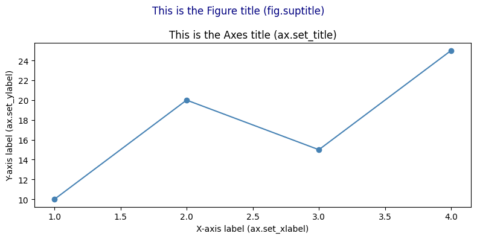
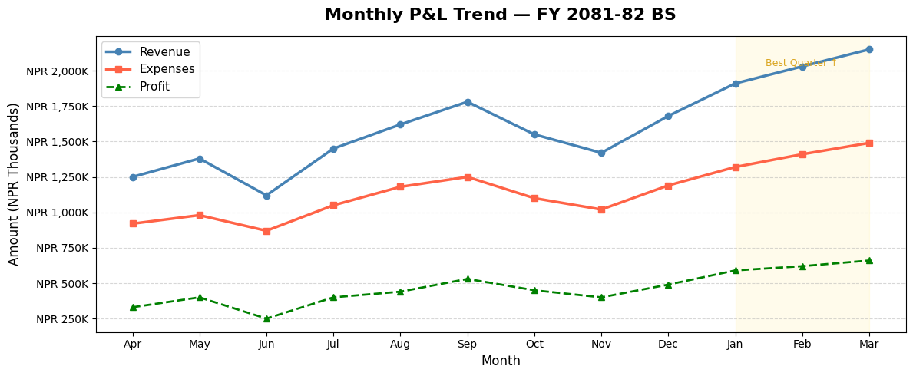

📊 Matplotlib for CA Professionals
Turning Financial Data into Powerful Charts
Pre-requisite: Module 3 — Pandas
Estimated time: 2–3 hours
What is Matplotlib?
Matplotlib is Python's foundational charting library. It gives you complete control over every element of a chart — exactly like customising a chart in Excel, but with code.
Why visualise financial data?
"A chart that shows revenue falling for 6 months straight is more convincing than a table of 72 numbers."
| Situation | Best Chart |
|---|---|
| Revenue trend over time | Line Chart |
| Expense comparison by category | Bar Chart |
| Revenue contribution by segment | Pie / Donut |
| Distribution of invoice amounts | Histogram |
| Budget vs Actual | Grouped Bar |
| Multi-metric dashboard | Subplots |
| Profit vs Revenue relationship | Scatter Plot |
📋 Table of Contents
| # | Topic |
|---|---|
| 1 | Installing & Setup |
| 2 | Anatomy of a Chart |
| 3 | Line Chart — Revenue Trend |
| 4 | Bar Chart — Expense Comparison |
| 5 | Horizontal Bar Chart |
| 6 | Grouped Bar — Budget vs Actual |
| 7 | Pie & Donut Chart — Revenue Mix |
| 8 | Histogram — Invoice Distribution |
| 9 | Scatter Plot — Profit vs Revenue |
| 10 | Subplots — Financial Dashboard |
| 11 | Styling & Formatting |
| 12 | Saving Charts |
| 13 | Practice Exercises |
Section 1: Installing & Setup
# Install if needed
# !pip install matplotlib pandas numpy
import matplotlib.pyplot as plt # plt is the universal shorthand
import pandas as pd
import numpy as np
# This makes charts appear inline in the notebook
%matplotlib inline
# Make charts look cleaner at higher resolution
plt.rcParams['figure.dpi'] = 100
print('Matplotlib version:', plt.matplotlib.__version__)
print('Ready!')
Matplotlib version: 3.10.6
Ready!
# ==== Shared data used throughout this notebook ====
months = ['Apr', 'May', 'Jun', 'Jul', 'Aug', 'Sep', 'Oct', 'Nov', 'Dec', 'Jan', 'Feb', 'Mar']
revenue = [1250, 1380, 1120, 1450, 1620, 1780, 1550, 1420, 1680, 1910, 2030, 2150] # in ₹ thousands
expenses = [ 920, 980, 870, 1050, 1180, 1250, 1100, 1020, 1190, 1320, 1410, 1490]
profit = [r - e for r, e in zip(revenue, expenses)]
expense_categories = ['Salaries', 'Raw Materials', 'Marketing', 'Rent', 'Utilities', 'Depreciation', 'Others']
expense_values = [4200, 2800, 1500, 1080, 480, 420, 320] # Annual, in ₹ thousands
print('Data loaded. Amounts are in ₹ Thousands.')
Data loaded. Amounts are in ₹ Thousands.
Section 2: Anatomy of a Matplotlib Chart
┌─────────────────────────── Figure (the whole canvas) ─────────────────────────────┐
│ │
│ ┌──────────────────────── Axes (the plot area) ──────────────────────────────┐ │
│ │ Title │ │
│ │ │ │
│ │ Y-axis label │ │
│ │ │ ← Plot (lines, bars, etc.) → │ │
│ │ │ │ │
│ │ └──────────────────────── X-axis label ───────────────────────────── │ │
│ └────────────────────────────────────────────────────────────────────────────┘ │
│ Legend │
└────────────────────────────────────────────────────────────────────────────────────┘
Every Matplotlib chart follows this two-step pattern:
1. Create the figure and axes: fig, ax = plt.subplots()
2. Draw on the axes: ax.plot(...), ax.bar(...), etc.
3. Show the chart: plt.show()
Section 3: Line Chart — Revenue Trend
Line charts are ideal for showing data over time — revenue trends, price movements, cumulative returns.
# Basic Line Chart
fig, ax = plt.subplots(figsize=(12, 5))
ax.plot(months, revenue, color='steelblue', linewidth=2.5, marker='o', markersize=6, label='Revenue')
ax.plot(months, expenses, color='tomato', linewidth=2.5, marker='s', markersize=6, label='Expenses')
ax.plot(months, profit, color='green', linewidth=2.0, marker='^', markersize=6, label='Profit', linestyle='--')
# Labels and title
ax.set_title('Monthly P&L Trend — FY 2024-25', fontsize=16, fontweight='bold', pad=15)
ax.set_xlabel('Month', fontsize=12)
ax.set_ylabel('Amount (₹ Thousands)', fontsize=12)
# Legend and grid
ax.legend(fontsize=11)
ax.grid(axis='y', linestyle='--', alpha=0.5)
# Format y-axis to show ₹ symbol
ax.yaxis.set_major_formatter(plt.FuncFormatter(lambda x, _: f'₹{x:,.0f}K'))
# Add shaded region to highlight Q4
ax.axvspan(9, 11, alpha=0.08, color='gold', label='Q4')
ax.annotate('Best Quarter ↑', xy=(10, 2030), fontsize=9, color='goldenrod', ha='center')
plt.tight_layout()
plt.show()

# Year-on-Year Comparison Line Chart
fy24_revenue = [980, 1050, 890, 1100, 1250, 1380, 1200, 1100, 1350, 1560, 1700, 1820]
fy25_revenue = [1250, 1380, 1120, 1450, 1620, 1780, 1550, 1420, 1680, 1910, 2030, 2150]
fig, ax = plt.subplots(figsize=(12, 5))
ax.plot(months, fy24_revenue, color='slategray', linewidth=2, marker='o', markersize=5,
label='FY 2023-24', linestyle='--')
ax.plot(months, fy25_revenue, color='steelblue', linewidth=2.5, marker='o', markersize=6,
label='FY 2024-25')
# Fill area between lines to highlight growth
ax.fill_between(months, fy24_revenue, fy25_revenue, alpha=0.12, color='steelblue', label='YoY Growth')
ax.set_title('Revenue: Year-on-Year Comparison', fontsize=15, fontweight='bold')
ax.set_xlabel('Month')
ax.set_ylabel('Revenue (₹ Thousands)')
ax.legend()
ax.grid(axis='y', linestyle='--', alpha=0.4)
plt.tight_layout()
plt.show()

Section 4: Bar Chart — Expense Comparison
Bar charts are ideal for comparing categories — expense heads, client revenues, department budgets.
# Vertical Bar Chart — Annual Expenses by Category
colors = ['#2196F3', '#F44336', '#FF9800', '#4CAF50', '#9C27B0', '#795548', '#607D8B']
fig, ax = plt.subplots(figsize=(11, 6))
bars = ax.bar(expense_categories, expense_values, color=colors, edgecolor='white', linewidth=0.8, width=0.6)
# Add value labels on top of each bar
for bar, val in zip(bars, expense_values):
ax.text(bar.get_x() + bar.get_width() / 2, bar.get_height() + 30,
f'₹{val:,}K', ha='center', va='bottom', fontsize=10, fontweight='bold')
ax.set_title('Annual Expense Breakdown — FY 2024-25', fontsize=15, fontweight='bold', pad=15)
ax.set_xlabel('Expense Category', fontsize=12)
ax.set_ylabel('Amount (₹ Thousands)', fontsize=12)
ax.set_ylim(0, max(expense_values) * 1.18)
ax.grid(axis='y', linestyle='--', alpha=0.4)
ax.spines['top'].set_visible(False)
ax.spines['right'].set_visible(False)
plt.tight_layout()
plt.show()

Section 5: Horizontal Bar Chart
Horizontal bars work better when category names are long — like account names or client names.
# Horizontal Bar — Client Revenue Contribution
clients = ['Tata Consultancy Svc', 'Infosys Limited', 'Wipro Technologies',
'HCL Technologies', 'Tech Mahindra', 'Mphasis Ltd']
client_revenue = [3850, 2960, 2480, 1950, 1620, 980] # ₹ Thousands
# Sort for better visual
sorted_pairs = sorted(zip(client_revenue, clients))
client_revenue_s, clients_s = zip(*sorted_pairs)
fig, ax = plt.subplots(figsize=(10, 6))
bars = ax.barh(clients_s, client_revenue_s,
color=plt.cm.Blues_r(np.linspace(0.3, 0.9, len(clients_s))),
edgecolor='white')
for bar, val in zip(bars, client_revenue_s):
ax.text(bar.get_width() + 30, bar.get_y() + bar.get_height() / 2,
f'₹{val:,}K', va='center', fontsize=10)
ax.set_title('Client-wise Revenue — FY 2024-25', fontsize=14, fontweight='bold')
ax.set_xlabel('Revenue (₹ Thousands)')
ax.set_xlim(0, max(client_revenue_s) * 1.2)
ax.spines['top'].set_visible(False)
ax.spines['right'].set_visible(False)
ax.grid(axis='x', linestyle='--', alpha=0.4)
plt.tight_layout()
plt.show()

Section 6: Grouped Bar Chart — Budget vs Actual
Grouped bars are perfect for comparing two or more related series side by side — like Budget vs Actual, or FY24 vs FY25 per department.
# Budget vs Actual by Quarter
quarters = ['Q1', 'Q2', 'Q3', 'Q4']
budget_qtly = [3800, 4200, 4500, 5100] # ₹ Thousands
actual_qtly = [3750, 4850, 4650, 6090]
x = np.arange(len(quarters))
width = 0.35
fig, ax = plt.subplots(figsize=(10, 6))
bars1 = ax.bar(x - width/2, budget_qtly, width, label='Budget', color='steelblue', alpha=0.85)
bars2 = ax.bar(x + width/2, actual_qtly, width, label='Actual', color='coral', alpha=0.85)
# Labels
for bar in bars1:
ax.text(bar.get_x() + bar.get_width()/2, bar.get_height() + 50,
f'{bar.get_height():,}', ha='center', fontsize=9, color='steelblue')
for bar in bars2:
ax.text(bar.get_x() + bar.get_width()/2, bar.get_height() + 50,
f'{bar.get_height():,}', ha='center', fontsize=9, color='coral')
# Variance annotation
for i, (b, a) in enumerate(zip(budget_qtly, actual_qtly)):
variance = a - b
color = 'green' if variance >= 0 else 'red'
sign = '+' if variance >= 0 else ''
ax.text(i, max(b, a) + 250, f'Var: {sign}{variance:,}', ha='center',
fontsize=8.5, color=color, fontweight='bold')
ax.set_title('Budget vs Actual Revenue by Quarter', fontsize=14, fontweight='bold')
ax.set_ylabel('Revenue (₹ Thousands)')
ax.set_xticks(x)
ax.set_xticklabels(quarters)
ax.legend()
ax.set_ylim(0, max(actual_qtly) * 1.25)
ax.grid(axis='y', linestyle='--', alpha=0.4)
ax.spines['top'].set_visible(False)
ax.spines['right'].set_visible(False)
plt.tight_layout()
plt.show()

Section 7: Pie & Donut Chart — Revenue or Expense Mix
Pie charts show part-to-whole relationships — revenue by business segment, expenses by head.
# Pie Chart — Revenue by Business Segment
segments = ['Products', 'Services', 'Consulting', 'Exports']
seg_vals = [6800, 4200, 2900, 1900] # ₹ Thousands
colors = ['#4472C4', '#ED7D31', '#A9D18E', '#FF5757']
explode = [0.05, 0, 0, 0] # Slightly separate the largest segment
fig, axes = plt.subplots(1, 2, figsize=(14, 6))
# --- Pie Chart ---
wedges, texts, autotexts = axes[0].pie(
seg_vals, labels=segments, colors=colors, explode=explode,
autopct='%1.1f%%', startangle=90, pctdistance=0.75,
wedgeprops=dict(edgecolor='white', linewidth=2)
)
for text in autotexts:
text.set_fontsize(11)
text.set_fontweight('bold')
axes[0].set_title('Revenue by Segment\n(Pie Chart)', fontsize=13, fontweight='bold')
# --- Donut Chart (Pie with a hole) ---
wedges2, texts2, autotexts2 = axes[1].pie(
seg_vals, labels=segments, colors=colors,
autopct='%1.1f%%', startangle=90, pctdistance=0.80,
wedgeprops=dict(width=0.55, edgecolor='white', linewidth=2) # width < 1 creates donut
)
for text in autotexts2:
text.set_fontsize(11)
text.set_fontweight('bold')
total = sum(seg_vals)
axes[1].text(0, 0, f'₹{total:,}K\nTotal', ha='center', va='center',
fontsize=12, fontweight='bold', color='dimgray')
axes[1].set_title('Revenue by Segment\n(Donut Chart)', fontsize=13, fontweight='bold')
plt.suptitle('Revenue Mix — FY 2024-25', fontsize=15, y=1.02)
plt.tight_layout()
plt.show()

Section 8: Histogram — Invoice Amount Distribution
Histograms show the distribution / frequency of numerical data. Useful in audit for: - Understanding the spread of invoice values - Identifying concentration around suspicious thresholds - Detecting Benford's Law anomalies
# Simulate 200 invoice amounts
np.random.seed(42)
invoice_amounts = np.concatenate([
np.random.exponential(scale=50000, size=160), # Most invoices: small-medium
np.random.uniform(200000, 500000, size=40) # Some large invoices
])
invoice_amounts = np.clip(invoice_amounts, 5000, 500000)
fig, axes = plt.subplots(1, 2, figsize=(14, 5))
# Histogram
axes[0].hist(invoice_amounts / 1000, bins=20, color='steelblue', edgecolor='white',
alpha=0.85, linewidth=0.8)
axes[0].axvline(np.mean(invoice_amounts)/1000, color='red', linestyle='--',
linewidth=2, label=f'Mean: ₹{np.mean(invoice_amounts)/1000:.0f}K')
axes[0].axvline(np.median(invoice_amounts)/1000, color='orange', linestyle='--',
linewidth=2, label=f'Median: ₹{np.median(invoice_amounts)/1000:.0f}K')
axes[0].set_title('Distribution of Invoice Amounts', fontsize=13, fontweight='bold')
axes[0].set_xlabel('Invoice Amount (₹ Thousands)')
axes[0].set_ylabel('Frequency (No. of Invoices)')
axes[0].legend()
axes[0].grid(axis='y', linestyle='--', alpha=0.4)
# Cumulative histogram — shows what % of invoices are below a value
axes[1].hist(invoice_amounts / 1000, bins=30, cumulative=True, density=True,
color='coral', edgecolor='white', alpha=0.85)
axes[1].axhline(0.8, color='navy', linestyle='--', linewidth=1.5, label='80th Percentile')
axes[1].set_title('Cumulative Distribution (CDF)', fontsize=13, fontweight='bold')
axes[1].set_xlabel('Invoice Amount (₹ Thousands)')
axes[1].set_ylabel('Cumulative Fraction')
axes[1].legend()
axes[1].grid(axis='y', linestyle='--', alpha=0.4)
axes[1].yaxis.set_major_formatter(plt.FuncFormatter(lambda y, _: f'{y*100:.0f}%'))
plt.suptitle('Invoice Amount Analysis — Audit Sampling View', fontsize=14, y=1.02)
plt.tight_layout()
plt.show()
p80 = np.percentile(invoice_amounts, 80)
above_p80 = np.sum(invoice_amounts > p80)
print(f'80th percentile: ₹{p80:,.0f}')
print(f'Invoices above ₹{p80:,.0f}: {above_p80} ({above_p80/len(invoice_amounts)*100:.1f}%) — these form the audit focus')

80th percentile: ₹212,208
Invoices above ₹212,208: 40 (20.0%) — these form the audit focus
Section 9: Scatter Plot — Profit vs Revenue Relationship
# Scatter plot — Monthly Revenue vs Profit
revenue_arr = np.array(revenue)
profit_arr = np.array(profit)
fig, ax = plt.subplots(figsize=(9, 6))
scatter = ax.scatter(revenue_arr, profit_arr,
c=range(12), cmap='RdYlGn', s=120, zorder=5, edgecolors='white', linewidth=1.5)
# Label each point with month name
for i, month in enumerate(months):
ax.annotate(month, (revenue_arr[i], profit_arr[i]),
textcoords='offset points', xytext=(8, 4), fontsize=9)
# Add trend line
z = np.polyfit(revenue_arr, profit_arr, 1)
p = np.poly1d(z)
x_line = np.linspace(min(revenue_arr), max(revenue_arr), 100)
ax.plot(x_line, p(x_line), 'navy', linestyle='--', linewidth=1.5, label='Trend', alpha=0.7)
plt.colorbar(scatter, ax=ax, label='Month (Apr=0 → Mar=11)')
ax.set_title('Revenue vs Profit — Monthly Correlation', fontsize=13, fontweight='bold')
ax.set_xlabel('Monthly Revenue (₹ Thousands)')
ax.set_ylabel('Monthly Profit (₹ Thousands)')
ax.grid(linestyle='--', alpha=0.3)
ax.legend()
corr = np.corrcoef(revenue_arr, profit_arr)[0, 1]
ax.text(0.05, 0.95, f'Correlation: {corr:.3f}', transform=ax.transAxes,
fontsize=11, verticalalignment='top',
bbox=dict(boxstyle='round', facecolor='lightyellow', alpha=0.8))
plt.tight_layout()
plt.show()

Section 10: Subplots — Building a Financial Dashboard
Subplots let you display multiple charts on one page — like a management dashboard.
# 2×2 Financial Dashboard
fig, axes = plt.subplots(2, 2, figsize=(16, 10))
fig.suptitle('Management Dashboard — FY 2024-25\nABC Enterprises Ltd.', fontsize=16, fontweight='bold', y=0.98)
# ── Chart 1 (top-left): Revenue & Expense trend ──
axes[0, 0].plot(months, revenue, 'steelblue', marker='o', markersize=5, linewidth=2, label='Revenue')
axes[0, 0].plot(months, expenses, 'tomato', marker='s', markersize=5, linewidth=2, label='Expenses')
axes[0, 0].fill_between(months, expenses, revenue, alpha=0.1, color='green')
axes[0, 0].set_title('Revenue vs Expenses Trend', fontweight='bold')
axes[0, 0].set_ylabel('₹ Thousands')
axes[0, 0].legend(fontsize=9)
axes[0, 0].grid(axis='y', linestyle='--', alpha=0.4)
axes[0, 0].tick_params(axis='x', rotation=45)
# ── Chart 2 (top-right): Monthly Profit bars ──
bar_colors = ['green' if p > 0 else 'red' for p in profit]
axes[0, 1].bar(months, profit, color=bar_colors, edgecolor='white', linewidth=0.8)
axes[0, 1].axhline(np.mean(profit), color='navy', linestyle='--', linewidth=1.5,
label=f'Avg: ₹{np.mean(profit):,.0f}K')
axes[0, 1].set_title('Monthly Net Profit', fontweight='bold')
axes[0, 1].set_ylabel('₹ Thousands')
axes[0, 1].legend(fontsize=9)
axes[0, 1].grid(axis='y', linestyle='--', alpha=0.4)
axes[0, 1].tick_params(axis='x', rotation=45)
# ── Chart 3 (bottom-left): Expense mix donut ──
colors_pie = ['#4472C4','#ED7D31','#A9D18E','#FF5757','#9B59B6','#E74C3C','#1ABC9C']
axes[2-2, 0+2-2] # placeholder to maintain comment alignment
axes[1, 0].pie(expense_values, labels=expense_categories, autopct='%1.0f%%',
colors=colors_pie, startangle=90, pctdistance=0.82,
wedgeprops=dict(width=0.55, edgecolor='white'))
axes[1, 0].set_title('Expense Mix (Donut)', fontweight='bold')
# ── Chart 4 (bottom-right): Cumulative profit ──
cum_profit = np.cumsum(profit)
axes[1, 1].fill_between(months, cum_profit, color='steelblue', alpha=0.3)
axes[1, 1].plot(months, cum_profit, color='steelblue', marker='o', markersize=5, linewidth=2)
axes[1, 1].axhline(0, color='black', linewidth=0.8)
axes[1, 1].set_title('Cumulative Profit (YTD)', fontweight='bold')
axes[1, 1].set_ylabel('₹ Thousands')
axes[1, 1].grid(axis='y', linestyle='--', alpha=0.4)
axes[1, 1].tick_params(axis='x', rotation=45)
plt.tight_layout()
plt.show()

Section 11: Styling & Formatting Tips
Good chart design communicates faster. Here are key formatting techniques:
# Using a built-in style for a more professional look
available_styles = plt.style.available
print('Available styles (first 10):', available_styles[:10])
# Use 'seaborn-v0_8-whitegrid' for clean, publication-ready charts
with plt.style.context('seaborn-v0_8-whitegrid'):
fig, ax = plt.subplots(figsize=(11, 5))
ax.plot(months, revenue, marker='o', linewidth=2.5, color='#2196F3', markersize=7)
ax.fill_between(months, revenue, alpha=0.15, color='#2196F3')
# Add data labels on each point
for i, (m, r) in enumerate(zip(months, revenue)):
ax.annotate(f'₹{r:,}K', (m, r), textcoords='offset points',
xytext=(0, 10), ha='center', fontsize=8.5, color='#1565C0')
ax.set_title('Revenue Trend — FY 2024-25\n(Seaborn Whitegrid Style)', fontsize=14, fontweight='bold')
ax.set_ylabel('₹ Thousands')
ax.set_ylim(900, 2400)
plt.tight_layout()
plt.show()
Available styles (first 10): ['Solarize_Light2', '_classic_test_patch', '_mpl-gallery', '_mpl-gallery-nogrid', 'bmh', 'classic', 'dark_background', 'fast', 'fivethirtyeight', 'ggplot']
/var/folders/kp/mytrwq8157q9s1tmw7r79fkm0000gn/T/ipykernel_31281/936812922.py:19: UserWarning: Glyph 8377 (\N{INDIAN RUPEE SIGN}) missing from font(s) Arial.
plt.tight_layout()
/Users/aayush/micromamba/envs/stats/lib/python3.10/site-packages/IPython/core/pylabtools.py:170: UserWarning: Glyph 8377 (\N{INDIAN RUPEE SIGN}) missing from font(s) Arial.
fig.canvas.print_figure(bytes_io, **kw)

Section 12: Saving Charts
Save charts as PNG, PDF, or SVG for reports and presentations.
# Create a chart and save it
fig, ax = plt.subplots(figsize=(11, 5))
ax.plot(months, revenue, color='steelblue', marker='o', linewidth=2.5, label='Revenue')
ax.plot(months, expenses, color='tomato', marker='s', linewidth=2.5, label='Expenses')
ax.set_title('Monthly P&L Trend — FY 2024-25', fontsize=14, fontweight='bold')
ax.set_ylabel('₹ Thousands')
ax.legend()
ax.grid(axis='y', linestyle='--', alpha=0.4)
plt.tight_layout()
# Save options:
plt.savefig('revenue_trend.png', dpi=300, bbox_inches='tight') # High-res PNG
plt.savefig('revenue_trend.pdf', bbox_inches='tight') # PDF (vector)
print('Charts saved:')
print(' revenue_trend.png (300 DPI — for presentations)')
print(' revenue_trend.pdf (vector — for print/reports)')
plt.show()
Charts saved:
revenue_trend.png (300 DPI — for presentations)
revenue_trend.pdf (vector — for print/reports)

Section 13: Practice Exercises
🏋️ Exercise 1 — Stacked Bar: Quarterly Cost Structure
Create a stacked bar chart showing quarterly expense breakdown across 4 categories:
quarters = ['Q1', 'Q2', 'Q3', 'Q4']
salaries = [1200, 1250, 1280, 1350] # ₹ Thousands
materials = [800, 950, 880, 1050]
overheads = [320, 345, 330, 380]
marketing = [180, 210, 195, 260]
import matplotlib.pyplot as plt
import numpy as np
quarters = ['Q1', 'Q2', 'Q3', 'Q4']
salaries = [1200, 1250, 1280, 1350]
materials = [800, 950, 880, 1050]
overheads = [320, 345, 330, 380]
marketing = [180, 210, 195, 260]
# Hint: Use ax.bar(..., bottom=...) to stack bars
# Each subsequent bar's bottom = sum of all previous categories
🏋️ Exercise 2 — Waterfall Chart: P&L Bridge
A waterfall chart shows how you get from Revenue to Net Profit — extremely common in management presentations and earnings calls.
Build one using bar charts with this data: - Revenue: ₹18,000K - Less COGS: ₹10,800K - = Gross Profit: ₹7,200K - Less Opex: ₹3,300K - Less Depreciation: ₹420K - Less Finance Cost: ₹216K - = Net Profit Before Tax: ₹3,264K
import matplotlib.pyplot as plt
import numpy as np
# Hint: For a waterfall chart:
# - Positive items (Revenue, Gross Profit, Net Profit) = green/blue bars from 0
# - Negative items (COGS, Opex, etc.) = red bars sitting on top of running total
# - Use 'bottom' parameter in ax.bar() to position bars correctly
items = ['Revenue', 'COGS', 'Gross\nProfit', 'Opex', 'Depreciation', 'Finance\nCost', 'Net Profit\nBefore Tax']
values = [18000, -10800, 7200, -3300, -420, -216, 3264] # ₹ Thousands
💡 Solutions
# SOLUTION — Exercise 1: Stacked Bar Chart
import matplotlib.pyplot as plt
import numpy as np
quarters = ['Q1', 'Q2', 'Q3', 'Q4']
salaries = np.array([1200, 1250, 1280, 1350])
materials = np.array([800, 950, 880, 1050])
overheads = np.array([320, 345, 330, 380])
marketing = np.array([180, 210, 195, 260])
fig, ax = plt.subplots(figsize=(10, 6))
b1 = ax.bar(quarters, salaries, label='Salaries', color='#4472C4', width=0.5)
b2 = ax.bar(quarters, materials, label='Materials', color='#ED7D31', width=0.5, bottom=salaries)
b3 = ax.bar(quarters, overheads, label='Overheads', color='#A9D18E', width=0.5, bottom=salaries+materials)
b4 = ax.bar(quarters, marketing, label='Marketing', color='#FF5757', width=0.5, bottom=salaries+materials+overheads)
# Total labels on top
totals = salaries + materials + overheads + marketing
for i, total in enumerate(totals):
ax.text(i, total + 30, f'₹{total:,}K', ha='center', fontsize=10, fontweight='bold')
ax.set_title('Quarterly Cost Structure — Stacked', fontsize=13, fontweight='bold')
ax.set_ylabel('₹ Thousands')
ax.set_ylim(0, max(totals) * 1.15)
ax.legend(loc='upper left')
ax.grid(axis='y', linestyle='--', alpha=0.4)
ax.spines['top'].set_visible(False)
ax.spines['right'].set_visible(False)
plt.tight_layout()
plt.show()

# SOLUTION — Exercise 2: Waterfall / P&L Bridge Chart
import matplotlib.pyplot as plt
import numpy as np
items = ['Revenue', 'COGS', 'Gross\nProfit', 'Opex', 'Depreciation', 'Finance\nCost', 'Net Profit\nBef. Tax']
values = [18000, -10800, 7200, -3300, -420, -216, 3264]
# Calculate running totals to position bars
subtotals = [0, 18000, 18000, 7200, 7200, 3900-420, 3480-216]
# For absolute bars (Revenue, Gross Profit, Net Profit)
absolute_items = {0, 2, 6}
bottoms = []
for i, (item, val) in enumerate(zip(items, values)):
if i in absolute_items:
bottoms.append(0)
else:
bottoms.append(subtotals[i])
colors = []
for i, val in enumerate(values):
if i in absolute_items:
colors.append('steelblue')
elif val > 0:
colors.append('seagreen')
else:
colors.append('tomato')
fig, ax = plt.subplots(figsize=(12, 6))
bars = ax.bar(items, [abs(v) for v in values], bottom=bottoms,
color=colors, edgecolor='white', linewidth=1.5, width=0.55)
# Value labels
for bar, val, bot in zip(bars, values, bottoms):
label = f'₹{abs(val):,}K'
y_pos = bot + abs(val) / 2
ax.text(bar.get_x() + bar.get_width()/2, y_pos, label,
ha='center', va='center', fontsize=9.5, fontweight='bold', color='white')
# Connector lines
for i in range(len(items) - 1):
if i not in absolute_items and i+1 not in absolute_items:
ax.plot([i + 0.28, i + 0.72], [bottoms[i+1], bottoms[i+1]],
color='gray', linewidth=1, linestyle='--', alpha=0.6)
ax.set_title('P&L Bridge — FY 2024-25\n(Revenue → Net Profit Before Tax)', fontsize=13, fontweight='bold')
ax.set_ylabel('₹ Thousands')
ax.grid(axis='y', linestyle='--', alpha=0.3)
ax.spines['top'].set_visible(False)
ax.spines['right'].set_visible(False)
from matplotlib.patches import Patch
ax.legend(handles=[Patch(color='steelblue', label='Total'),
Patch(color='tomato', label='Reduction'),
Patch(color='seagreen', label='Addition')])
plt.tight_layout()
plt.show()

🎉 Module 4 Complete!
What you've learned
| Chart Type | When to Use |
|---|---|
| Line Chart | Revenue/profit trends over time |
| Bar Chart | Comparing categories (expenses, clients) |
| Horizontal Bar | Long category names, rankings |
| Grouped Bar | Budget vs Actual, year-on-year |
| Stacked Bar | Cost structure, segment contribution |
| Pie / Donut | Revenue mix, expense breakdown |
| Histogram | Invoice distribution, audit sampling |
| Scatter Plot | Relationships, correlation analysis |
| Waterfall | P&L bridge, variance explanation |
| Subplots | Management dashboards |
Next up → Module 5: Seaborn — Statistical charts with even less code!
Python for CA Professionals — Module 4: Matplotlib